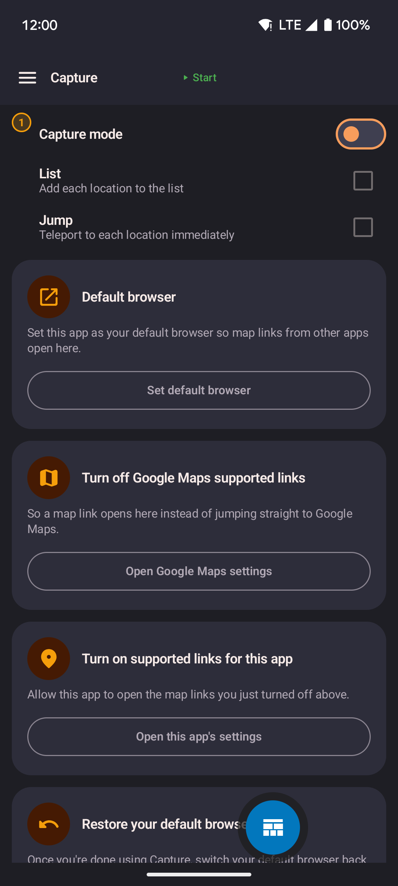

Location links
A location link is a map pin sent from another app or another person. The app handles a link in one of two ways:
- Automatic needs no setup. Tap a link. The app opens on that spot and asks what to do.
- Capture is optional. It collects links into a list without leaving your current app. You can then save the list as a route.
Sharing a location
- Favorites and routes: use the three-dot menu to copy or send
lat, lontext. You can paste it back in later. - Map: press and hold a point, then tap Share this location. This sends a link that opens this app on that spot.
Automatic links
What happens when you open a link
- The app opens, or comes to the front if it is already running.
- The map moves to the linked location.
- A popup asks what to do:
- Teleport here moves your fake position there at once.
- Walk here walks there at your current speed.
- Walk here via roads follows real roads.
- Do nothing closes the popup. Your position does not change.
Nothing happens until you choose.
Opening links from other apps
You do not need this app's share button. If another app has a share location option, choose this app from the list. It opens the spot with the same popup.
This works for map links from many apps. It includes the Maps app's Share button, which sends a shortened link. This app follows the link to find the coordinates. If the app cannot read a link, a short message appears at the bottom of the screen.
Capture mode
Capture collects map links from other apps into a list on your device. You can then save the list as a route. With Capture on, opening a map link keeps you in your current app instead of opening Google Maps. The floating widget is not required.
Open Capture
Open Capture from the Home screen or the side menu. The page stays open when you leave for Android settings or another app. You can also press and hold the widget's paste button, then tap the Capture shortcut.
Set up Capture
Until this app is your default browser, the Capture page shows only these setup steps and a Setup guide button. Follow the steps in order.

- The rest of the page appears when setup is done.
-
Tap Default browser. Set this app as your default browser.
On Samsung phones, the popup may do nothing. Open Android's default apps settings and pick this app there. - Go back to the Capture page. It checks by itself and moves to the next step.
- In this app's Android settings, turn on supported links. The app cannot check this step. Check it yourself.
- Tap Turn off Google Maps supported links. Turn off "open supported links" for Google Maps. If you skip this step, Maps links go to Maps and this app never sees them.
After setup, the Capture switch, List and Jump, the captured list, and Save as route appear. Points you captured earlier come back too.
To turn Capture off: tap the three dots at the top of the page, choose Restore default browser, tick the confirm box, and tap Restore. Capture turns off and Android's default apps screen opens. Pick your usual browser there. The app cannot do this for you. Your captured points and pass-through browser choice stay. The same menu has Setup guide.
Choose what captured links do
- Turn on Capture mode.
- Choose List to add each tapped location to your list, Jump to move there at once, or both.
- If the list already has points, choose Clear to start again or Keep to add to the list.
If Capture mode is off, or List and Jump are both unchecked, links pass through. Nothing is collected and your location does not change. Tap Pass-through to pick the browser that opens those links. While Capture mode is off, Google Maps links open in the Google Maps app first. If Maps is not installed, your chosen browser opens them. The browser list refreshes when you return from Android settings.
Collect and save a route
- Tap a map link in another app.
- List adds the point. Jump moves you there. A short message confirms it. The other app stays open.
- Open Capture to see your list in an orange box, in capture order.
- Use Copy, Last (removes the newest point), or Clear above the route name field.
- Type a route name.
- Tap Save as route. You need at least two points. The route appears under Routes.
Optimize proximity is on by default when you copy or save. It reorders points so each stop is near the last. Turn on Keep original to save points in capture order.
Tapping the same link twice in a row adds it once. Tapping an earlier point again adds it again, so a route can loop.
URL format
The link format is:
https://locationjoystick.shrtcts.fr/?lat=LAT&lon=LON| Parameter | Type | Valid range | Description |
|---|---|---|---|
lat | decimal | −90 to 90 | Latitude |
lon | decimal | −180 to 180 | Longitude |
Example:
https://locationjoystick.shrtcts.fr/?lat=35.6762&lon=139.6503For third-party tools
You can build these links yourself for scripts or automation. No key or sign-in is needed.
- Both
latandlonare required. The app ignores a link that lacks either one. - The app ignores a link with coordinates outside the valid range.
A second link format works between apps:
locationjoystick://open?lat=LAT&lon=LONBoth formats work the same way. Use the https:// link when you share with other people.